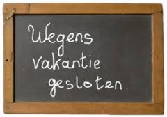
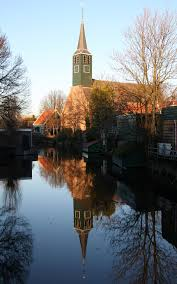

seizoenafsluiting en vakantierooster |
|
|---|---|
|  |
Afsluiting seizoenDe laatste repetitie in de Palmboom zal dit jaar op woensdag 5 juli plaatsvinden. Daarna sluiten we het seizoen af op 12 juli thuis bij Ans Aafjes. We beginnen weer in de Palmboom op 30 augustus (en dus niet op 6 september zoals eerder in de Kras vermeld). |
zaterdag 14 oktober |
|
Concert met Raede Hoeke uit FrieslandOp zaterdag 14 oktober treden ‘s middags we op samen met het koor Raede Hoeke uit Heerenveen in de kerk aan het Noordeinde in Wormerveer. Na afloop gaan de koren genieten van een gezamenlijke maaltijd. Meer over de Raede Hoeke hier. |

|
zondag 20 december |
|
|  |
KerstconcertOns jaarlijks kerstconcert willen we weer houden in de Nicolaaskerk te Krommenie. Op woensdagavond 20 december vanaf 20.00 u. Zoals gebruikelijk met gluehwein en versnaperingen in de pauze. Verdere plannen maken we in de loop van het jaar. |